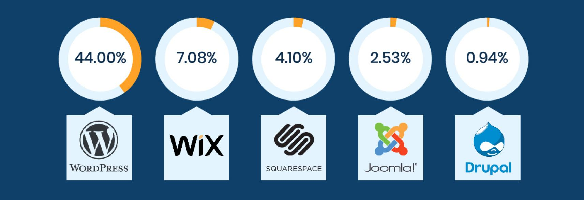
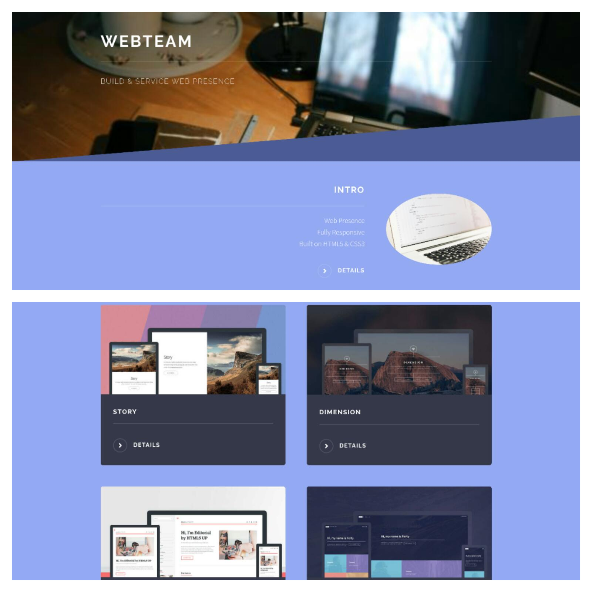
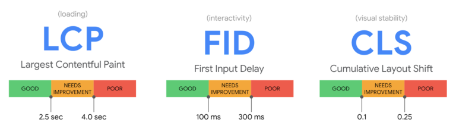

WebTeam
WebTeam
Build & Service Web Presence
CMS & Builders

De meest voorkomende manier waarop Web Presence wordt gemaakt is via het traditionale Content Management Systemen (CMS). Hieronder volgen de categoriën.
→ zie: Usage statistics of content management systems
On-premises
De meest gebruiktecategorie is het Free Open Source Software (FOSS). Gebruiker kan software downloaden en in house het systeem ontwikkelen en de productie gereed maken. Eenmaal gereed dan online gaan via uploaden naar de eigen productie server of naar in de cloud gehuurde server. Optioneel een webshop toevoegen kan.Bijvoorbeeld: WordPress, Drupal, Joomla.
Cloud-based
Bij Website Builders kan gebruiker de software niet downloaden en maakt hij/zij in de cloud op infrastructuur van leverancier een account aan en gebruikt dan het systeem. Van origine ligt focus op website maar nu is een webshop een standaard optie.Bijvoorbeeld: Squarespace, Wix, Weebly, Webflow.
Bij Webshop kan gebruiker de software niet downloaden en maakt in de cloud op infrastructuur van leverancier een account aan en gebruikt dan het systeem. Focus ligt op commercie dus "verkoop", met optioneel een website toevoegen. Webshops kunnen vaak als add-on aan een CMS worden toegevoegd.
Bijvoorbeeld: Shopify, Ecwid.
Plus- & minpunten
➕ Tooling, Drag & Drop Ease of Use
➕ Content Mngt zonder IT personeel
➕ Veel Theme Templates zijn gratis
➕ FOSS CMS gratis & géén Hosting lock-in
➕ Webshop Framework Ready for Use
➖ Tooling is complex met stevige Learning Curve
➖ Tooling Overhead Performance issues
➖ Website Builder & Store Vendor lock-in
➖ Themes & Plugins kunnen Hacking gevoelig zijn
➖ Shiny Themes & Plugins alsnog betalen
➖ Update inconsistency Tool vs Themes & Plugins
➖ Gegenereerde Code complex
➖ Alsnog Code editen bij Specials
➖ SEO implementatie vaak moeizaam
Back to Basic Solution
 WebTeam maakt gebruikt van Pre-Built responsive Business Solutions die zijn gemaakt in prima leesbaar plain vanilla internet browser HTML en CSS Code en ligt aan de basis van Core Web Vitals met score "goed".
Uit meer dan 90 verschillende Pre-Builts kan een keuze worden gemaakt op basis van al aanwezige functionaliteit, look & feel. Gekozen oplossing functioneert direct maar is "leeg" niet gevuld met enige bedrijfseigen specificaties.
Customization
De "Look" wordt customized met text, images, audio, video's, kleurenstellingen, logo, publicaties, documenten, folders, route map, social media accounts, contact enzovoorts.
En de "feel" wordt customized door modificatie van flow, buttons, actions, menu, pagination, headers, footers, side bars, tables, lists, row & columns, forms, contact, icons, embedded feeds van Twitter, Instagram, Facebook etc. Met optioneel add-on Webshop, embedded Buy buttons.
Kenmerken
➕ Native clear clean HTML CSS Code
➕ Website faster Loading & Speed
➕ Géén Theme Templates
➕ Géén Hosting Vendor lock-in
➕ Geen Tooling Performance issues
➕ Géén Hacking gevoeligheid
➕ Géén extra betalen Templates & Plugins
➕ Géén Update issues Tool vs Theme & Plugins
➕ Géén extra Code editen bij Specials
➕ Géén moeizame SEO implementatie
➖ Coding Learning Curve gelijk Tooling, Drag & Drop
Core Web Vitals
 De Core Web Vitals hebben betrekking op de laadsnelheid, het reactievermogen, visuele stabiliteit van een pagina, HTTPS en Mobile Responsive. Deze Vitals zijn als ranking factor opgenomen in het algoritme van Google.
LCP, FID en CLS kennen ieder een score op de schaal: slecht – (moet worden verbeterd) – goed.
kenmerken
- LCP Loading binnen 2.5 seconden
- FID First input delay 100 milliseconden
- CLS Cumulatieve layout shift max 0.1
- HTTPS SSL certificaat
- Mobile Responsive
Coding
 Coding van HTML en CSS werd vanaf het begin gezien als moeilijk leerbaar. Vandaar het ontstaan van tooling met ease of use drag en drop. Maar inmiddels zijn die tools zodanig geëvolueerd dat ze hun doel voorbij streven en qua complexiteit niet onderdoen aan old school coding.
Coding van HTML en CSS werd vanaf het begin gezien als moeilijk leerbaar. Vandaar het ontstaan van tooling met ease of use drag en drop. Maar inmiddels zijn die tools zodanig geëvolueerd dat ze hun doel voorbij streven en qua complexiteit niet onderdoen aan old school coding.
Coding van responsive Website vanaf scratch is een opgave. Omdat WebTeam werkt met pre-builts is het moeilijkste werk al gedaan en behoeft de code alleen nog aanpassing van look & feel, hetgeen eenmaal in productie ook geldt voor beheer & onderhoud.
Coding gaat met behulp van een "editor" die hanteert platte tekst zonder "onder water" opmaak en besturingskarakters. Sublime Text wordt vaak gebruikt maar er zijn legio andere tools en developer gebruikt meestal zijn/haar eigen voorkeur.
→ zie: Wikipedia Source Code Editor
→ zie: Wikipedia SublimeText
→ zie: Website SublimeText
Kenmerken
- Sidemap snel door code navigeren
- Zoek & vervang code over files
- Bladwijzers binnen file
- Automatisch opslaan van files
- Aanpasbare syntaxiskleuring
- Automatische aanvulling van code
- Macro's en plugins
- Instelbare sneltoetsen
- Uiterlijk met thema's aanpasbaar